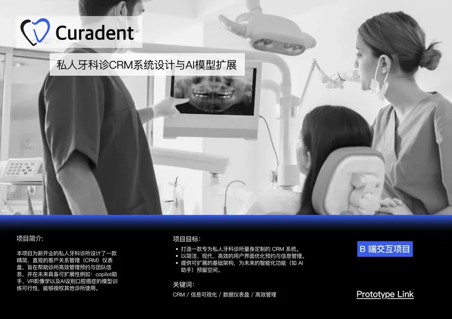

Curadent / 私人诊所工作台
先理清诊所日常工作，再找到 AI 的位置
小型诊所需要快速了解当日预约、人员可用时间和运营信息。Curadent 以虚拟诊所为场景，探索一个轻量工作台，以及对话式操作和 AI 能力可能出现的位置。

需要解决什么问题
业务信息分散会增加查看和协调成本；新增能力若脱离现有任务，也可能制造更多操作负担。需要先建立清晰的信息结构与工作流。
项目参与
围绕私人诊所场景进行 CRM 界面与扩展方案探索，原稿包括虚拟品牌、设计规范、仪表盘、预约流程和对话交互。
关键决策与取舍
- 01
围绕日常工作聚合信息
将预约、患者与团队可用时间组织在首页，服务开诊前查看和周期性运营回顾。
- 02
让状态和动作一起出现
日历展示预约状态，支持时段选择和逐步输入；以明确的确认结果收束操作，另探索对话式查询、录入与提醒。
- 03
把 AI 放进具体任务
将 AI 与 VR 作为后续扩展，探索患者档案、影像查看和随访中的接入点，先说明服务什么任务。
产出与验证到哪里
形成品牌与设计系统、工作台、预约和对话流程，以及 AI／VR 扩展方案。
Curadent 是虚拟诊所设计项目。AI／VR 为概念扩展，未据此声称模型训练、医疗效果或临床部署。
把作品展开来看
带到下一个项目的思考
AI 产品的起点是一个值得改善的工作流。先把对象、状态和决策理清，再讨论智能能力应该如何介入。